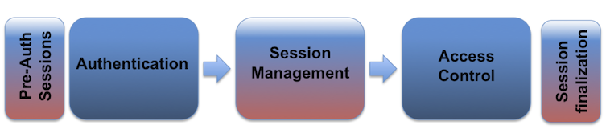

Session Management Cheat Sheet¶
Введение¶
Веб-аутентификация, управление сессиями и контроль доступа:
Веб-сессия — это последовательность сетевых HTTP-транзакций (запросов и ответов), связанных с одним и тем же пользователем. Современные и сложные веб-приложения требуют сохранения информации или состояния о каждом пользователе в течение нескольких запросов. Поэтому сессии предоставляют возможность устанавливать переменные — например, права доступа и языковые настройки — которые будут применяться ко всем взаимодействиям пользователя с веб-приложением на протяжении всей сессии.
Веб-приложения могут создавать сессии для отслеживания анонимных пользователей уже с самого первого запроса. Примером может служить сохранение языковых предпочтений пользователя. Кроме того, веб-приложения используют сессии после аутентификации пользователя. Это обеспечивает возможность идентифицировать пользователя в последующих запросах, а также применять элементы управления безопасным доступом, предоставлять авторизованный доступ к личным данным пользователя и повышать удобство использования приложения. Таким образом, современные веб-приложения могут поддерживать сессии как до, так и после аутентификации.
После установки аутентифицированной сессии идентификатор сессии (или токен) временно равнозначен наиболее сильному методу аутентификации, используемому приложением, — например, имени пользователя и паролю, парольным фразам, одноразовым паролям (OTP), цифровым сертификатам на стороне клиента, смарт-картам или биометрическим данным (например, отпечатку пальца или сетчатке глаза). См. OWASP Authentication Cheat Sheet.
HTTP является протоколом без сохранения состояния (RFC2616, раздел 5), в котором каждая пара запрос/ответ независима от других веб-взаимодействий. Поэтому для введения концепции сессии необходимо реализовать механизмы управления сессиями, связывающие модули аутентификации и контроля доступа (авторизации), которые обычно присутствуют в веб-приложениях:

Идентификатор сессии или токен связывает учётные данные аутентификации пользователя (в виде пользовательской сессии) с HTTP-трафиком пользователя и соответствующими элементами управления доступом, применяемыми веб-приложением. Сложность этих трёх компонентов (аутентификация, управление сессиями и контроль доступа) в современных веб-приложениях, а также тот факт, что их реализация и связывание лежат на плечах веб-разработчика (поскольку фреймворки веб-разработки не обеспечивают строгих взаимосвязей между этими модулями), делают реализацию безопасного модуля управления сессиями весьма сложной задачей.
Раскрытие, перехват, предсказание, подбор методом перебора или фиксация идентификатора сессии приведут к атакам по захвату сессии (session hijacking или sidejacking), при которых злоумышленник может полностью имитировать жертву в веб-приложении. Злоумышленники могут проводить два типа атак по захвату сессии: целенаправленные или массовые. При целенаправленной атаке цель злоумышленника — выдать себя за конкретного (или привилегированного) пользователя веб-приложения. При массовой атаке цель злоумышленника — выдать себя за любого действительного или легитимного пользователя веб-приложения (или получить к нему доступ).
Свойства идентификатора сессии¶
Чтобы поддерживать аутентифицированное состояние и отслеживать прогресс пользователей в веб-приложении, приложения предоставляют пользователям идентификатор сессии (session ID или токен), который назначается в момент создания сессии и используется совместно пользователем и веб-приложением на протяжении всей сессии (передаётся в каждом HTTP-запросе). Идентификатор сессии представляет собой пару name=value.
Для реализации безопасных идентификаторов сессии генерация идентификаторов (ID или токенов) должна удовлетворять следующим требованиям.
Идентификация по имени идентификатора сессии¶
Имя, используемое идентификатором сессии, не должно быть слишком описательным и не должно содержать излишних сведений о назначении и смысле идентификатора.
Имена идентификаторов сессий, используемые наиболее распространёнными фреймворками веб-разработки, легко поддаются идентификации: например, PHPSESSID (PHP), JSESSIONID (J2EE), CFID и CFTOKEN (ColdFusion), ASP.NET_SessionId (ASP .NET) и т.д. Таким образом, имя идентификатора сессии может раскрыть технологии и языки программирования, используемые в веб-приложении.
Рекомендуется изменить имя идентификатора сессии, используемое по умолчанию в фреймворке веб-разработки, на обобщённое, например id.
Энтропия идентификатора сессии¶
Идентификаторы сессий должны иметь не менее 64 бит энтропии для предотвращения атак методом перебора сессий. Энтропия означает степень случайности или непредсказуемости значения. Каждый «бит» энтропии удваивает количество возможных исходов, то есть идентификатор сессии с 64 битами энтропии может принимать 2^64 возможных значений.
Для генерации идентификаторов сессий необходимо использовать надёжный CSPRNG (криптографически стойкий генератор псевдослучайных чисел). Это гарантирует равномерное распределение генерируемых значений среди всех возможных. В противном случае злоумышленники могут использовать методы статистического анализа для выявления закономерностей в создании идентификаторов сессий, что фактически снижает энтропию и позволяет угадывать или предсказывать действительные идентификаторы сессий.
ПРИМЕЧАНИЕ:
- Ожидаемое время, необходимое злоумышленнику для перебора действительного идентификатора сессии, зависит от таких факторов, как количество бит энтропии, количество активных сессий, время истечения сессий и скорость угадывания злоумышленником.
- Если веб-приложение генерирует идентификаторы сессий с 64 битами энтропии, злоумышленнику потребуется около 585 лет, чтобы успешно угадать действительный идентификатор сессии, при условии, что злоумышленник может делать 10 000 попыток в секунду при наличии 100 000 одновременно активных сессий в приложении.
- Дополнительный анализ ожидаемого времени для перебора злоумышленником идентификаторов сессий доступен здесь.
Длина идентификатора сессии¶
Как указано в предыдущем разделе Энтропия идентификатора сессии, основным требованием безопасности к идентификаторам сессий является то, что они должны содержать не менее 64 бит энтропии для предотвращения атак методом перебора. Хотя длина идентификатора сессии имеет значение, именно энтропия обеспечивает безопасность. Идентификатор сессии должен быть достаточно длинным, чтобы кодировать необходимую энтропию, предотвращая атаки методом перебора, при которых злоумышленник угадывает действительные идентификаторы.
Различные методы кодирования могут давать разную длину при одинаковом количестве энтропии. Идентификаторы сессий часто представляются в шестнадцатеричном кодировании. При использовании шестнадцатеричного кодирования идентификатор сессии должен быть не менее 16 шестнадцатеричных символов, чтобы обеспечить требуемые 64 бита энтропии. При использовании других кодировок (например, Base64 или кодировки Microsoft для идентификаторов сессий ASP.NET) может потребоваться иное количество символов для представления минимальных 64 бит энтропии.
Важно отметить, что если какая-либо часть идентификатора сессии фиксирована или предсказуема, эффективная энтропия снижается, и может потребоваться увеличить длину для компенсации. Например, если половина 16-символьного шестнадцатеричного идентификатора сессии фиксирована, только оставшиеся 8 символов являются случайными, обеспечивая лишь 32 бита энтропии — что недостаточно для надёжной безопасности. Для поддержания безопасности убедитесь, что весь идентификатор сессии генерируется случайным образом и непредсказуемо, или увеличьте общую длину, если части идентификатора не являются случайными.
ПРИМЕЧАНИЕ:
- Дополнительная информация о взаимосвязи между длиной идентификатора сессии и его энтропией доступна здесь.
Содержимое (значение) идентификатора сессии¶
Содержимое (или значение) идентификатора сессии должно быть лишённым смысла, чтобы предотвратить атаки раскрытия информации, при которых злоумышленник способен декодировать содержимое идентификатора и извлечь сведения о пользователе, сессии или внутренней работе веб-приложения.
Идентификатор сессии должен представлять собой лишь идентификатор на стороне клиента, и его значение никогда не должно содержать конфиденциальную информацию или персональные данные (PII). Подробнее о PII можно прочитать в Википедии или в этой статье.
Смысловое содержание и бизнес-логика, связанные с идентификатором сессии, должны храниться на стороне сервера — конкретно в объектах сессии, в базе данных управления сессиями или в репозитории.
Хранимая информация может включать IP-адрес клиента, User-Agent, электронную почту, имя пользователя, ID пользователя, роль, уровень привилегий, права доступа, языковые предпочтения, ID аккаунта, текущее состояние, время последнего входа, тайм-ауты сессий и другие внутренние детали сессии. Если объекты и свойства сессии содержат конфиденциальную информацию, например номера кредитных карт, необходимо надлежащим образом зашифровать и защитить репозиторий управления сессиями.
Рекомендуется использовать идентификатор сессии, создаваемый используемым языком или фреймворком. Если вам необходимо создать собственный идентификатор сессии, используйте криптографически стойкий генератор псевдослучайных чисел (CSPRNG) с размером не менее 128 бит и убедитесь, что каждый идентификатор уникален.
Реализация управления сессиями¶
Реализация управления сессиями определяет механизм обмена, который будет использоваться между пользователем и веб-приложением для совместного использования и непрерывного обмена идентификатором сессии. В HTTP существует несколько механизмов поддержания состояния сессии в веб-приложениях: файлы cookie (стандартный HTTP-заголовок), параметры URL (переписывание URL — RFC2396), аргументы URL в GET-запросах, аргументы тела в POST-запросах (например, скрытые поля форм HTML) или проприетарные HTTP-заголовки.
Предпочтительный механизм обмена идентификатором сессии должен позволять определять расширенные свойства токена, такие как дата и время истечения токена или детализированные ограничения использования. Именно поэтому файлы cookie (RFC 2109, 2965 и 6265) являются одним из наиболее широко используемых механизмов обмена идентификаторами сессий, предлагая расширенные возможности, недоступные в других методах.
Использование определённых механизмов обмена идентификаторами сессий — например, тех, где идентификатор включается в URL, — может привести к раскрытию идентификатора сессии (в веб-ссылках и журналах, истории и закладках браузера, заголовке Referer или поисковых системах), а также создаёт риски других атак, например манипуляции с идентификатором или атак фиксации сессии.
Встроенные реализации управления сессиями¶
Фреймворки веб-разработки, такие как J2EE, ASP .NET, PHP и другие, предоставляют собственные функции управления сессиями и соответствующую реализацию. Рекомендуется использовать эти встроенные возможности фреймворков, а не разрабатывать собственные с нуля, поскольку они широко применяются во множестве веб-сред и проверены сообществами по безопасности и разработке веб-приложений.
Однако следует учитывать, что эти фреймворки также имели уязвимости и слабые места в прошлом, поэтому всегда рекомендуется использовать последнюю доступную версию, потенциально исправляющую все известные уязвимости, а также проверять и изменять конфигурацию по умолчанию для повышения безопасности, следуя рекомендациям, описанным в данном документе.
Хранилище или репозиторий, используемый механизмом управления сессиями для временного сохранения идентификаторов сессий, должен быть защищённым и предотвращать локальное или удалённое случайное раскрытие или несанкционированный доступ к идентификаторам.
Используемые и принимаемые механизмы обмена идентификаторами сессий¶
Веб-приложение должно использовать файлы cookie для управления обменом идентификаторами сессий. Если пользователь передаёт идентификатор сессии через другой механизм обмена, например параметр URL, веб-приложение должно отказаться принимать его как часть защитной стратегии против фиксации сессии.
ПРИМЕЧАНИЕ:
- Даже если веб-приложение использует файлы cookie в качестве механизма обмена идентификаторами сессий по умолчанию, оно может принимать и другие механизмы обмена.
- Поэтому необходимо тщательно проверить через тестирование все различные механизмы, принимаемые веб-приложением при обработке и управлении идентификаторами сессий, и ограничить принимаемые механизмы отслеживания сессий исключительно файлами cookie.
- В прошлом некоторые веб-приложения использовали параметры URL или даже переключались с файлов cookie на параметры URL (через автоматическое переписывание URL), если выполнялись определённые условия (например, обнаружение веб-клиентов без поддержки или без принятия файлов cookie из соображений конфиденциальности пользователя).
Безопасность транспортного уровня¶
Для защиты обмена идентификатором сессии от активного перехвата и пассивного раскрытия в сетевом трафике необходимо использовать зашифрованное HTTPS (TLS)-соединение для всей веб-сессии, а не только для процесса аутентификации, когда передаются учётные данные пользователя. Для клиентов с поддержкой HTTP Strict Transport Security (HSTS) это может быть обеспечено соответствующим механизмом.
Кроме того, для обеспечения передачи идентификатора сессии только через зашифрованный канал должен использоваться атрибут Secure файла cookie. Использование зашифрованного канала связи также защищает сессию от некоторых атак фиксации сессии, при которых злоумышленник может перехватывать и изменять трафик для внедрения (или фиксации) идентификатора сессии в браузере жертвы.
Следующий набор лучших практик ориентирован на защиту идентификатора сессии (в особенности при использовании файлов cookie) и интеграцию HTTPS в веб-приложение:
- Не переключайте данную сессию с HTTP на HTTPS или наоборот, поскольку это раскроет идентификатор сессии в открытом виде через сеть.
- При перенаправлении на HTTPS убедитесь, что cookie устанавливается или перегенерируется после выполнения перенаправления.
- Не смешивайте зашифрованное и незашифрованное содержимое (HTML-страницы, изображения, CSS, JavaScript-файлы и т.д.) на одной странице или из одного домена.
- По возможности избегайте предоставления публичного незашифрованного содержимого и приватного зашифрованного содержимого с одного и того же хоста. Если требуется небезопасное содержимое, рассмотрите его размещение на отдельном небезопасном домене.
- Внедрите HTTP Strict Transport Security (HSTS) для принудительного использования HTTPS-соединений.
Общее руководство по безопасной реализации TLS см. в OWASP Transport Layer Security Cheat Sheet.
Важно подчеркнуть, что TLS не защищает от предсказания, перебора, подделки на стороне клиента или фиксации идентификаторов сессий; однако он обеспечивает эффективную защиту от перехвата или кражи идентификаторов сессий злоумышленником посредством атаки «человек посередине».
Файлы cookie¶
Механизм обмена идентификаторами сессий на основе файлов cookie предоставляет множество функций безопасности в виде атрибутов cookie, которые можно использовать для защиты обмена идентификатором сессии:
Атрибут Secure¶
Атрибут Secure файла cookie указывает веб-браузерам передавать cookie только через зашифрованное HTTPS (SSL/TLS)-соединение. Этот механизм защиты сессии обязателен для предотвращения раскрытия идентификатора сессии в ходе атак MitM (человек посередине). Он обеспечивает то, что злоумышленник не сможет просто перехватить идентификатор сессии из трафика веб-браузера.
Принудительное использование веб-приложением только HTTPS для коммуникации (даже когда порт TCP/80, HTTP, закрыт на хосте веб-приложения) не защищает от раскрытия идентификатора сессии, если атрибут Secure для cookie не установлен — веб-браузер может быть обманут, чтобы раскрыть идентификатор сессии через незашифрованное HTTP-соединение. Злоумышленник может перехватить и подделать трафик пользователя-жертвы и внедрить незашифрованную HTTP-ссылку на веб-приложение, которая заставит браузер передать идентификатор сессии в открытом виде.
См. также: SecureFlag
Атрибут HttpOnly¶
Атрибут HttpOnly файла cookie запрещает веб-браузерам предоставлять скриптам (например, JavaScript или VBscript) доступ к cookie через объект DOM document.cookie. Эта защита идентификатора сессии обязательна для предотвращения кражи идентификатора сессии в ходе XSS-атак. Однако если XSS-атака сочетается с CSRF-атакой, запросы, отправляемые веб-приложению, будут включать cookie сессии, поскольку браузер всегда включает cookie при отправке запросов. Атрибут HttpOnly защищает только конфиденциальность cookie; злоумышленник не может использовать его в автономном режиме, вне контекста XSS-атаки.
См. OWASP XSS (Cross Site Scripting) Prevention Cheat Sheet.
См. также: HttpOnly
Атрибут SameSite¶
SameSite определяет атрибут cookie, предотвращающий отправку браузерами cookie с флагом SameSite в межсайтовых запросах. Основная цель — снизить риск утечки информации между источниками и обеспечить некоторую защиту от атак межсайтовой подделки запросов.
См. также: SameSite
Атрибуты Domain и Path¶
Атрибут Domain файла cookie указывает веб-браузерам отправлять cookie только на указанный домен и все его поддомены. Если атрибут не установлен, по умолчанию cookie будет отправляться только на исходный сервер. Атрибут Path файла cookie указывает веб-браузерам отправлять cookie только в указанную директорию или поддиректории (или пути, или ресурсы) в веб-приложении. Если атрибут не установлен, по умолчанию cookie будет отправляться только для директории (или пути) запрошенного ресурса, устанавливающего этот cookie.
Рекомендуется использовать узкую или ограниченную область действия для этих двух атрибутов. Таким образом, атрибут Domain не должен устанавливаться (ограничивая cookie только исходным сервером), а атрибут Path должен быть установлен настолько строго, насколько это возможно, для пути веб-приложения, использующего идентификатор сессии.
Установка атрибута Domain на слишком широкое значение, например example.com, позволяет злоумышленнику проводить атаки на идентификаторы сессий между разными хостами и веб-приложениями, принадлежащими одному домену, что известно как атаки с использованием cookie поддоменов. Например, уязвимости в www.example.com могут позволить злоумышленнику получить доступ к идентификаторам сессий с secure.example.com.
Кроме того, не рекомендуется смешивать веб-приложения с разными уровнями безопасности в одном домене. Уязвимости в одном из веб-приложений позволят злоумышленнику установить идентификатор сессии для другого веб-приложения в том же домене, используя разрешительный атрибут Domain (например, example.com), что является техникой, применяемой в атаках фиксации сессии.
Хотя атрибут Path позволяет изолировать идентификаторы сессий между разными веб-приложениями, использующими разные пути на одном хосте, настоятельно рекомендуется не запускать разные веб-приложения (особенно с разными уровнями или областями безопасности) на одном хосте. Другие методы могут использоваться этими приложениями для доступа к идентификаторам сессий, например объект document.cookie. Кроме того, любое веб-приложение может устанавливать cookie для любого пути на этом хосте.
Файлы cookie уязвимы к атакам DNS-спуфинга/захвата/отравления, при которых злоумышленник может манипулировать DNS-разрешением, чтобы заставить веб-браузер раскрыть идентификатор сессии для данного хоста или домена.
Атрибуты Expires и Max-Age¶
Механизмы управления сессиями на основе файлов cookie могут использовать два типа cookie: непостоянные (или сессионные) и постоянные. Если cookie имеет атрибуты Max-Age (который имеет приоритет над Expires) или Expires, он считается постоянным и будет сохранён на диске веб-браузером до истечения срока действия.
Как правило, механизмы управления сессиями для отслеживания пользователей после аутентификации используют непостоянные cookie. Это приводит к исчезновению сессии с клиента при закрытии текущего экземпляра веб-браузера. Поэтому настоятельно рекомендуется использовать непостоянные cookie для управления сессиями, чтобы идентификатор сессии не оставался в кэше веб-клиента на длительное время, откуда его может получить злоумышленник.
- Убедитесь, что конфиденциальная информация не скомпрометирована: она должна быть непостоянной, зашифрованной и храниться только в течение необходимого времени.
- Убедитесь, что через манипуляцию с cookie нельзя выполнить несанкционированные действия.
- Убедитесь, что флаг Secure установлен для предотвращения случайной передачи по незащищённому каналу.
- Определите, проверяет ли весь код приложения при всех переходах между состояниями наличие cookie и принудительно ли их использование.
- Убедитесь, что весь cookie зашифрован, если в нём хранятся конфиденциальные данные.
- Определите все cookie, используемые приложением, их имена и причины их необходимости.
HTML5 Web Storage API¶
Рабочая группа Web Hypertext Application Technology (WHATWG) описывает HTML5 Web Storage API — localStorage и sessionStorage — как механизмы для хранения пар имя-значение на стороне клиента.
В отличие от HTTP-cookie, содержимое localStorage и sessionStorage не передаётся автоматически в запросах или ответах браузером и используется для хранения данных на стороне клиента.
API localStorage¶
Область действия¶
Данные, сохранённые с помощью localStorage API, доступны страницам, загруженным из того же источника, который определяется схемой (https://), хостом (example.com), портом (443) и доменом/областью (example.com).
Это обеспечивает аналогичный доступ к данным, что и при использовании флага secure для cookie, то есть данные, сохранённые из https, не могут быть получены через http. Из-за возможного одновременного доступа из отдельных окон/потоков данные, сохранённые в localStorage, могут быть подвержены проблемам совместного доступа (например, гонке условий) и должны рассматриваться как неблокирующие (Спецификация Web Storage API).
Продолжительность¶
Данные, сохранённые с помощью localStorage API, сохраняются между сессиями просмотра, увеличивая временной период, в течение которого они могут быть доступны другим пользователям системы.
Офлайн-доступ¶
Стандарты не требуют шифрования данных localStorage при хранении, что означает возможность прямого доступа к этим данным с диска.
Сценарий использования¶
WHATWG рекомендует использовать localStorage для данных, к которым необходим доступ из разных окон или вкладок, в течение нескольких сессий, а также когда по соображениям производительности могут потребоваться большие (многомегабайтные) объёмы данных.
API sessionStorage¶
Область действия¶
sessionStorage API хранит данные в контексте окна, из которого был вызван, то есть Вкладка 1 не может получить доступ к данным, сохранённым из Вкладки 2.
Кроме того, как и localStorage API, данные, сохранённые с помощью sessionStorage API, доступны страницам, загруженным из того же источника, который определяется схемой (https://), хостом (example.com), портом (443) и доменом/областью (example.com).
Это обеспечивает аналогичный доступ к данным, что и при использовании флага secure для cookie, то есть данные, сохранённые из https, не могут быть получены через http.
Продолжительность¶
sessionStorage API хранит данные только в течение текущей сессии просмотра. После закрытия вкладки эти данные больше не доступны для получения. Это не обязательно предотвращает доступ, если вкладка браузера используется повторно или остаётся открытой. Данные также могут сохраняться в памяти до события сборки мусора.
Офлайн-доступ¶
Стандарты не требуют шифрования данных sessionStorage при хранении, что означает возможность прямого доступа к этим данным с диска.
Сценарий использования¶
WHATWG рекомендует использовать sessionStorage для данных, актуальных для одного экземпляра рабочего процесса, например для сведений о бронировании билета, при этом несколько рабочих процессов могут выполняться параллельно в других вкладках. Привязанность к окну/вкладке предотвратит утечку данных между рабочими процессами в разных вкладках.
Ссылки¶
Web Workers¶
Web Workers запускают JavaScript-код в глобальном контексте, отдельном от контекста текущего окна. Существует канал коммуникации с основным исполняемым окном — MessageChannel.
Сценарий использования¶
Web Workers являются альтернативой хранилищу браузера для (сессионных) секретов, когда сохранение данных после обновления страницы не является требованием. Чтобы Web Workers обеспечивали безопасное хранение в браузере, любой код, требующий секрета, должен находиться внутри Web Worker, и секрет никогда не должен передаваться в контекст основного окна.
Хранение секретов в памяти Web Worker обеспечивает те же гарантии безопасности, что и HttpOnly-cookie: конфиденциальность секрета защищена. Тем не менее XSS-атака может использоваться для отправки сообщений Web Worker с целью выполнения операции, требующей секрета. Web Worker вернёт результат операции в основной поток выполнения.
Преимущество реализации через Web Worker по сравнению с HttpOnly-cookie заключается в том, что Web Worker позволяет изолированному JavaScript-коду получить доступ к секрету; HttpOnly-cookie недоступен никакому JavaScript. Если клиентский JavaScript-код требует доступа к секрету, реализация на основе Web Worker является единственным вариантом хранения в браузере, сохраняющим конфиденциальность секрета.
Жизненный цикл идентификатора сессии¶
Генерация и проверка идентификатора сессии: разрешительное и строгое управление сессиями¶
Существует два типа механизмов управления сессиями для веб-приложений — разрешительный и строгий — связанных с уязвимостями фиксации сессий. Разрешительный механизм позволяет веб-приложению изначально принимать любое значение идентификатора сессии, установленное пользователем, как действительное, создавая для него новую сессию, тогда как строгий механизм требует, чтобы веб-приложение принимало только те значения идентификатора сессии, которые были ранее сгенерированы самим веб-приложением.
Токены сессий, по возможности, должны обрабатываться веб-сервером или генерироваться с помощью криптографически стойкого генератора случайных чисел.
Хотя наиболее распространённым механизмом сегодня является строгий (более безопасный), PHP по умолчанию использует разрешительный. Разработчики должны убедиться, что веб-приложение не использует разрешительный механизм ни при каких обстоятельствах. Веб-приложения никогда не должны принимать идентификатор сессии, который они никогда не генерировали; при получении такового они должны сгенерировать и предложить пользователю новый действительный идентификатор. Кроме того, такой сценарий должен быть определён как подозрительная активность, и должно быть сгенерировано оповещение.
Обращение с идентификатором сессии как с любым другим вводом пользователя¶
Идентификаторы сессий должны считаться ненадёжными, как и любой другой пользовательский ввод, обрабатываемый веб-приложением, и должны тщательно проверяться и верифицироваться. В зависимости от используемого механизма управления сессиями идентификатор сессии будет получен в GET- или POST-параметре, в URL или в HTTP-заголовке (например, в cookie). Если веб-приложения не проверяют и не фильтруют недопустимые значения идентификаторов сессий перед их обработкой, они могут потенциально использоваться для эксплуатации других уязвимостей — например, SQL-инъекции, если идентификаторы сессий хранятся в реляционной базе данных, или постоянного XSS, если идентификаторы сессий хранятся и впоследствии отображаются веб-приложением.
Обновление идентификатора сессии при любом изменении уровня привилегий¶
Идентификатор сессии должен обновляться или перегенерироваться веб-приложением при любом изменении уровня привилегий в рамках связанной пользовательской сессии. Наиболее распространённый сценарий, при котором перегенерация идентификатора сессии обязательна, — это процесс аутентификации, когда уровень привилегий пользователя изменяется с неаутентифицированного (или анонимного) на аутентифицированный, хотя в некоторых случаях статус авторизованного ещё не достигнут. К распространённым сценариям относятся: изменение пароля, изменение разрешений или переключение с роли обычного пользователя на роль администратора в веб-приложении. Для всех конфиденциальных страниц веб-приложения любые предыдущие идентификаторы сессий должны игнорироваться; только текущий идентификатор сессии должен назначаться каждому новому запросу, полученному для защищённого ресурса, а старый или предыдущий идентификатор сессии должен уничтожаться.
Наиболее распространённые фреймворки веб-разработки предоставляют функции и методы сессий для обновления идентификатора сессии, например request.getSession(true) и HttpSession.invalidate() (J2EE), Session.Abandon() и Response.Cookies.Add(new...) (ASP .NET) или session_start() и session_regenerate_id(true) (PHP).
Перегенерация идентификатора сессии обязательна для предотвращения атак фиксации сессии, при которых злоумышленник устанавливает идентификатор сессии в браузере пользователя-жертвы вместо того, чтобы перехватить существующий идентификатор сессии жертвы, как это происходит при большинстве других атак на сессии, — и это не зависит от использования HTTP или HTTPS. Данная защита снижает влияние других веб-уязвимостей, которые также могут использоваться для проведения атак фиксации сессии, таких как HTTP response splitting или XSS (см. здесь и здесь).
Дополнительной рекомендацией является использование разных имён идентификатора сессии или токена (или набора идентификаторов сессий) до и после аутентификации, чтобы веб-приложение могло отслеживать анонимных и аутентифицированных пользователей без риска раскрытия или привязки пользовательской сессии между обоими состояниями.
Повторная аутентификация после событий риска¶
Веб-приложения должны требовать повторной аутентификации после высокорисковых событий, таких как:
- Изменения критической информации пользователя (например, пароля или адреса электронной почты)
- Попытки входа с новых или подозрительных IP-адресов или устройств
- Процессы восстановления аккаунта (например, сброс пароля или обнаружение скомпрометированного аккаунта)
Лучшие практики по реализации повторной аутентификации после этих событий см. в разделе Reauthentication After Risk Events в Authentication Cheat Sheet.
Дополнительные ресурсы¶
- Why Frequent Reauthentication Can Be a UX Pitfall by Tailscale
Особенности при использовании нескольких файлов cookie¶
Если веб-приложение использует файлы cookie в качестве механизма обмена идентификаторами сессий и для данной сессии устанавливается несколько cookie, веб-приложение должно проверять все cookie (и обеспечивать соответствие между ними) перед предоставлением доступа к пользовательской сессии.
Очень распространена ситуация, когда веб-приложения устанавливают пользовательский cookie до аутентификации через HTTP для отслеживания неаутентифицированных (или анонимных) пользователей. После аутентификации пользователя в веб-приложении устанавливается новый защищённый cookie после аутентификации через HTTPS, и устанавливается привязка между обоими cookie и пользовательской сессией. Если веб-приложение не проверяет оба cookie для аутентифицированных сессий, злоумышленник может использовать незащищённый cookie до аутентификации для получения доступа к аутентифицированной пользовательской сессии (см. здесь и здесь).
Веб-приложениям следует избегать использования одного и того же имени cookie для разных путей или доменных областей в одном веб-приложении, поскольку это увеличивает сложность решения и потенциально создаёт проблемы области видимости.
Истечение срока сессии¶
Для минимизации периода времени, в течение которого злоумышленник может проводить атаки на активные сессии и захватывать их, обязательно устанавливать тайм-ауты истечения для каждой сессии, определяющие время, в течение которого сессия будет оставаться активной. Недостаточное истечение срока сессии в веб-приложении увеличивает подверженность другим атакам на основе сессий, поскольку для злоумышленника, способного повторно использовать действительный идентификатор сессии и захватить связанную с ним сессию, она должна быть ещё активна.
Чем короче интервал сессии, тем меньше времени у злоумышленника на использование действительного идентификатора. Значения тайм-аута истечения сессии должны устанавливаться в соответствии с назначением и характером веб-приложения, балансируя безопасность и удобство использования, чтобы пользователь мог комфортно завершать операции в веб-приложении без частого истечения сессии.
Значения как тайм-аута простоя, так и абсолютного тайм-аута в значительной степени зависят от того, насколько критичны веб-приложение и его данные. Типичные диапазоны тайм-аута простоя: 2–5 минут для приложений с высокой ценностью и 15–30 минут для приложений с низким риском. Абсолютные тайм-ауты зависят от того, как долго пользователь обычно использует приложение. Если приложение предназначено для использования офисным работником в течение полного рабочего дня, подходящим диапазоном абсолютного тайм-аута может быть от 4 до 8 часов.
Когда срок действия сессии истекает, веб-приложение должно активно аннулировать сессию на обеих сторонах — клиентской и серверной. Серверная сторона является наиболее важной и обязательной с точки зрения безопасности.
Для большинства механизмов обмена сессиями клиентские действия по аннулированию идентификатора сессии основаны на очистке значения токена. Например, для аннулирования cookie рекомендуется указать пустое (или недопустимое) значение для идентификатора сессии и установить атрибут Expires (или Max-Age) в прошедшую дату (если используется постоянный cookie): Set-Cookie: id=; Expires=Friday, 17-May-03 18:45:00 GMT
Для закрытия и аннулирования сессии на стороне сервера веб-приложение обязано принимать активные меры при истечении срока сессии или при активном выходе пользователя, используя функции и методы, предоставляемые механизмами управления сессиями, такие как HttpSession.invalidate() (J2EE), Session.Abandon() (ASP .NET) или session_destroy()/unset() (PHP).
Автоматическое истечение срока сессии¶
Тайм-аут простоя¶
Все сессии должны реализовывать тайм-аут простоя или бездействия. Этот тайм-аут определяет время, в течение которого сессия будет оставаться активной при отсутствии активности, закрывая и аннулируя сессию по истечении заданного периода простоя с момента последнего HTTP-запроса, полученного веб-приложением для данного идентификатора сессии.
Тайм-аут простоя ограничивает возможности злоумышленника угадать и использовать действительный идентификатор сессии другого пользователя. Однако если злоумышленнику удалось захватить данную сессию, тайм-аут простоя не ограничивает его действия, поскольку он может периодически генерировать активность в сессии, удерживая её активной на более длительный срок.
Управление тайм-аутом сессии и её истечение должны принудительно применяться на стороне сервера. Если клиент используется для обеспечения тайм-аута сессии — например, с помощью токена сессии или других параметров клиента для отслеживания временных ссылок (например, количества минут с момента входа) — злоумышленник может манипулировать ими, чтобы продлить длительность сессии.
Абсолютный тайм-аут¶
Все сессии должны реализовывать абсолютный тайм-аут независимо от активности сессии. Этот тайм-аут определяет максимальное время, в течение которого сессия может быть активной, закрывая и аннулируя её по истечении заданного абсолютного периода с момента первоначального создания данной сессии веб-приложением. После аннулирования сессии пользователь вынужден повторно аутентифицироваться в веб-приложении и установить новую сессию.
Абсолютная сессия ограничивает время, в течение которого злоумышленник может использовать захваченную сессию и выдавать себя за пользователя-жертву.
Тайм-аут обновления¶
В качестве альтернативы веб-приложение может реализовать дополнительный тайм-аут обновления, по истечении которого идентификатор сессии автоматически обновляется в середине пользовательской сессии — независимо от активности сессии и, следовательно, от тайм-аута простоя.
По истечении определённого времени с момента первоначального создания сессии веб-приложение может сгенерировать новый идентификатор для пользовательской сессии и попытаться установить или обновить его на клиенте. Предыдущее значение идентификатора сессии будет ещё действительным в течение некоторого времени, обеспечивая безопасный интервал, до тех пор пока клиент не узнает о новом идентификаторе и не начнёт его использовать. В этот момент, когда клиент переключается на новый идентификатор в рамках текущей сессии, приложение аннулирует предыдущий идентификатор.
Данный сценарий минимизирует время, в течение которого данное значение идентификатора сессии, потенциально полученное злоумышленником, может быть повторно использовано для захвата пользовательской сессии, даже когда сессия реального пользователя ещё активна. Пользовательская сессия остаётся открытой на легитимном клиенте, хотя связанное с ней значение идентификатора сессии прозрачно обновляется периодически в течение длительности сессии — каждый раз по истечении тайм-аута обновления. Таким образом, тайм-аут обновления дополняет тайм-ауты простоя и абсолютный тайм-аут, особенно когда значение абсолютного тайм-аута значительно растягивается во времени (например, когда требованием приложения является поддержание пользовательских сессий открытыми в течение длительного времени).
В зависимости от реализации потенциально может возникнуть состояние гонки, при котором злоумышленник с ещё действительным предыдущим идентификатором сессии отправляет запрос раньше пользователя-жертвы сразу после истечения тайм-аута обновления и первым получает значение обновлённого идентификатора. По крайней мере, в этом сценарии пользователь-жертва может обнаружить атаку, поскольку сессия внезапно завершится, так как связанный идентификатор сессии больше не действителен.
Ручное истечение срока сессии¶
Веб-приложения должны предоставлять механизмы, позволяющие осведомлённым о безопасности пользователям активно закрывать свою сессию после завершения работы с веб-приложением.
Кнопка выхода¶
Веб-приложения должны предоставлять видимую и легкодоступную кнопку выхода (logoff, exit или закрыть сессию), которая доступна в заголовке или меню веб-приложения и достижима с каждого ресурса и страницы веб-приложения, чтобы пользователь мог вручную закрыть сессию в любое время. Как описано в разделе Session_Expiration, веб-приложение должно аннулировать сессию по крайней мере на стороне сервера.
ПРИМЕЧАНИЕ: К сожалению, не все веб-приложения предоставляют пользователям возможность закрыть текущую сессию. Таким образом, улучшения на стороне клиента позволяют добросовестным пользователям защитить свои сессии, помогая закрывать их тщательным образом.
Кэширование веб-содержимого и Clear-Site-Data¶
Даже после завершения сессии личные или конфиденциальные данные, которыми обменивались в ходе сессии, могут оставаться доступными через кэш веб-браузера. Для устранения этой проблемы веб-приложения должны использовать ограничительные директивы кэширования для всего HTTP- и HTTPS-трафика. Это включает использование HTTP-заголовков, таких как Cache-Control и Pragma, или эквивалентных тегов <meta> на всех страницах — особенно на тех, которые отображают конфиденциальное содержимое.
Идентификаторы сессий никогда не должны кэшироваться. Для предотвращения этого настоятельно рекомендуется включать директиву Cache-Control: no-store в ответы, содержащие идентификаторы сессий. В отличие от no-cache, который допускает кэширование, но требует повторной проверки, no-store гарантирует, что ответ (включая заголовки, такие как Set-Cookie) никогда не будет сохранён ни в каком кэше.
Помимо предотвращения будущего кэширования, приложения должны обеспечивать удаление ранее сохранённых конфиденциальных данных при завершении сессии. Это можно достичь, возвращая заголовок ответа Clear-Site-Data (например, Clear-Site-Data: "cache", "cookies", "storage") при выходе или завершении сессии. Это даёт браузеру инструкцию удалить кэшированные ресурсы, cookie и другое клиентское хранилище, связанное с источником, обеспечивая полную очистку сессии.
Примечание: Директива
Cache-Control: no-cache="Set-Cookie, Set-Cookie2"иногда предлагается для предотвращения кэширования идентификаторов сессий. Однако этот синтаксис не пользуется широкой поддержкой и может привести к непредвиденному поведению. Вместо этого используйтеCache-Control: no-storeдля более надёжной защиты.Clear-Site-Data: cacheможно использовать для очистки всех сохранённых ответов сайта в кэше браузера, поэтому используйте это осторожно. Обратите внимание, что это не повлияет на общие или промежуточные кэши. Ссылка: MDN - Cache-Control и MDN - Clear-Site-Data header
Повторная аутентификация после событий риска¶
Для обеспечения целостности сессии и защиты аккаунта приложения должны требовать повторной аутентификации при обнаружении конкретных высокорисковых событий. К ним могут относиться:
- Попытки или завершённые изменения пароля
- Вход с нового или подозрительного IP-адреса или устройства
- Завершение процессов восстановления аккаунта или прохождения проверки (например, сценарии взлома и блокировки)
Требование повторной аутентификации помогает снизить риски захвата сессии и несанкционированного доступа — особенно при использовании долгоживущих сессий или внешних поставщиков удостоверений.
Рекомендуемые практики:
- Запрашивать у пользователей первичные учётные данные (например, пароль) или принудительно применять MFA
- Предоставлять чёткие сообщения, объясняющие необходимость повторной аутентификации
Дополнительные клиентские средства защиты управления сессиями¶
Веб-приложения могут дополнять ранее описанные средства защиты управления сессиями дополнительными мерами на стороне клиента. Клиентские средства защиты, как правило, в форме проверок и верификаций на JavaScript, не являются пуленепробиваемыми и могут быть легко обойдены опытным злоумышленником, но могут создать ещё один уровень защиты, который злоумышленнику необходимо преодолеть.
Начальный тайм-аут входа¶
Веб-приложения могут использовать JavaScript-код на странице входа для оценки и измерения времени, прошедшего с момента загрузки страницы и предоставления идентификатора сессии. Если попытка входа осуществляется по истечении определённого времени, клиентский код может уведомить пользователя о том, что максимальное время для входа истекло, и перезагрузить страницу входа, тем самым получая новый идентификатор сессии.
Этот дополнительный механизм защиты пытается принудить к обновлению идентификатора сессии до аутентификации, избегая сценариев, при которых ранее использованный (или вручную установленный) идентификатор сессии повторно используется следующей жертвой, работающей за тем же компьютером, — например, в атаках фиксации сессии.
Принудительный выход при закрытии окна браузера¶
Веб-приложения могут использовать JavaScript-код для перехвата всех событий закрытия вкладок или окон браузера (или даже кнопки «Назад») и принятия соответствующих действий для закрытия текущей сессии перед закрытием браузера, эмулируя ситуацию, при которой пользователь вручную закрыл сессию с помощью кнопки выхода.
Отключение межвкладочных сессий браузера¶
Веб-приложения могут использовать JavaScript-код после входа пользователя и установки сессии, чтобы принудить пользователя повторно аутентифицироваться при открытии новой вкладки или окна браузера для того же веб-приложения. Веб-приложение не хочет допускать совместного использования одной и той же сессии несколькими вкладками или окнами браузера. Поэтому приложение пытается запретить браузеру одновременно использовать один и тот же идентификатор сессии между ними.
ПРИМЕЧАНИЕ: Этот механизм не может быть реализован, если идентификатор сессии передаётся через файлы cookie, поскольку cookie совместно используются всеми вкладками/окнами браузера.
Автоматический выход клиента¶
JavaScript-код может использоваться веб-приложением на всех (или критических) страницах для автоматического выхода клиентских сессий по истечении тайм-аута простоя — например, путём перенаправления пользователя на страницу выхода (тот же ресурс, что используется кнопкой выхода, упомянутой ранее).
Преимущество расширения серверной функциональности тайм-аута простоя клиентским кодом состоит в том, что пользователь может видеть, что сессия завершилась из-за бездеятельности, или даже может быть заблаговременно уведомлён об истечении сессии через обратный счётчик и предупреждающие сообщения. Этот удобный для пользователя подход помогает избежать потери данных на страницах, требующих ввода большого объёма данных, из-за тихого истечения серверных сессий.
Обнаружение атак на сессии¶
Обнаружение угадывания и перебора идентификаторов сессий¶
Если злоумышленник пытается угадать или перебрать действительный идентификатор сессии, ему необходимо отправить несколько последовательных запросов к целевому веб-приложению с разными идентификаторами сессий с одного (или нескольких) IP-адреса(-ов). Кроме того, если злоумышленник пытается проанализировать предсказуемость идентификатора сессии (например, с помощью статистического анализа), ему необходимо отправить несколько последовательных запросов с одного (или нескольких) IP-адреса(-ов) к целевому веб-приложению для получения новых действительных идентификаторов сессий.
Веб-приложения должны уметь обнаруживать оба сценария на основе количества попыток получить (или использовать) разные идентификаторы сессий, а также оповещать о нарушителях и/или блокировать их IP-адреса.
Обнаружение аномалий идентификатора сессии¶
Веб-приложения должны сосредоточиться на обнаружении аномалий, связанных с идентификатором сессии, например его манипуляции. Проект OWASP AppSensor Project предоставляет фреймворк и методологию для реализации встроенных возможностей обнаружения вторжений в веб-приложениях, ориентированных на выявление аномалий и неожиданного поведения, в виде точек обнаружения и действий по реагированию. Вместо использования внешних уровней защиты бизнес-логика и продвинутый интеллект иногда доступны только изнутри веб-приложения, где можно установить несколько точек обнаружения, связанных с сессиями, — например, при изменении или удалении существующего cookie, добавлении нового cookie, повторном использовании идентификатора сессии другого пользователя или изменении местоположения пользователя или User-Agent в середине сессии.
Привязка идентификатора сессии к другим свойствам пользователя¶
Для обнаружения (и в некоторых сценариях защиты от) нарушений поведения пользователя и захвата сессии настоятельно рекомендуется привязывать идентификатор сессии к другим свойствам пользователя или клиента, таким как IP-адрес клиента, User-Agent или цифровой сертификат на стороне клиента. Если веб-приложение обнаруживает какое-либо изменение или аномалию между этими различными свойствами в середине установленной сессии, это является очень хорошим индикатором попыток манипуляции с сессией и её захвата, и этот простой факт можно использовать для оповещения и/или завершения подозрительной сессии.
Хотя эти свойства не могут использоваться веб-приложениями для надёжной защиты от атак на сессии, они значительно повышают возможности обнаружения (и защиты) веб-приложения. Однако опытный злоумышленник может обойти эти средства контроля, повторно используя тот же IP-адрес, назначенный пользователю-жертве, путём совместного использования одной и той же сети (очень распространено в средах NAT, например, точках доступа Wi-Fi), или используя тот же исходящий веб-прокси (очень распространено в корпоративных средах), или вручную изменяя User-Agent, чтобы он выглядел точно как у пользователя-жертвы.
Ведение журнала жизненного цикла сессий: мониторинг создания, использования и уничтожения идентификаторов сессий¶
Веб-приложения должны расширять свои возможности ведения журналов, включая информацию о полном жизненном цикле сессий. В частности, рекомендуется фиксировать события, связанные с сессиями, — такие как создание, обновление и уничтожение идентификаторов сессий, а также детали их использования в операциях входа и выхода, изменения уровня привилегий в рамках сессии, истечение тайм-аута, недопустимые активности в сессии (при их обнаружении) и критические бизнес-операции в рамках сессии.
Детали журнала могут включать временну́ю метку, IP-адрес источника, запрошенный целевой веб-ресурс (участвующий в операции сессии), HTTP-заголовки (включая User-Agent и Referer), GET- и POST-параметры, коды и сообщения об ошибках, имя пользователя (или ID пользователя) и идентификатор сессии (cookie, URL, GET, POST...).
Конфиденциальные данные, например идентификатор сессии, не должны включаться в журналы во избежание локального или удалённого раскрытия журналов сессий или несанкционированного доступа к ним. Однако для корреляции записей журнала с конкретными сессиями необходимо записывать некоторую информацию, специфичную для сессии. Рекомендуется записывать хэш идентификатора сессии с солью вместо самого идентификатора — это позволит выполнять корреляцию журналов для конкретных сессий без раскрытия самого идентификатора.
В частности, веб-приложения должны тщательно защищать административные интерфейсы, позволяющие управлять всеми текущими активными сессиями. Зачастую они используются сотрудниками службы поддержки для решения проблем, связанных с сессиями, или даже общих проблем путём имитации пользователя и просмотра веб-приложения так, как его видит пользователь.
Журналы сессий становятся одним из основных источников данных для обнаружения вторжений в веб-приложения и могут также использоваться системами защиты от вторжений для автоматического завершения сессий и/или отключения пользовательских аккаунтов при обнаружении одной или нескольких атак. Если реализованы активные средства защиты, эти действия по защите также должны фиксироваться в журнале.
Одновременные входы в систему¶
Это решение веб-приложения — определять, разрешены ли несколько одновременных входов одного и того же пользователя с одного или разных клиентских IP-адресов. Если веб-приложение не хочет разрешать одновременные входы в систему, оно должно принимать эффективные меры после каждого нового события аутентификации, неявно завершая ранее доступную сессию или спрашивая пользователя (через старую, новую или обе сессии), какая сессия должна оставаться активной.
Рекомендуется добавлять веб-приложениям пользовательские функции, позволяющие в любое время проверять детали активных сессий, отслеживать и оповещать пользователя об одновременных входах, предоставлять пользовательские возможности для удалённого ручного завершения сессий и отслеживать историю активности аккаунта (журнал) путём записи различных деталей клиента, таких как IP-адрес, User-Agent, дата и время входа, время простоя и т.д.
Защита управления сессиями с помощью WAF¶
Существуют ситуации, когда исходный код веб-приложения недоступен или не может быть изменён, либо когда изменения, необходимые для реализации множества рекомендаций и лучших практик безопасности, описанных выше, подразумевают полную переработку архитектуры веб-приложения и, следовательно, не могут быть легко реализованы в краткосрочной перспективе.
В таких сценариях, или для дополнения средств защиты веб-приложения с целью обеспечения максимальной безопасности веб-приложения, рекомендуется использовать внешние средства защиты, такие как Web Application Firewalls (WAF), которые могут снизить угрозы управления сессиями, описанные выше.
Web Application Firewalls предлагают возможности обнаружения и защиты от атак на основе сессий. С одной стороны, для WAF тривиально принудительно применять атрибуты безопасности для cookie, такие как флаги Secure и HttpOnly, применяя базовые правила перезаписи к заголовку Set-Cookie для всех ответов веб-приложения, устанавливающих новый cookie.
С другой стороны, могут быть реализованы более продвинутые возможности, позволяющие WAF отслеживать сессии и соответствующие идентификаторы сессий, а также применять всевозможные средства защиты от фиксации сессии (путём обновления идентификатора сессии на стороне клиента при обнаружении изменений привилегий), применять привязанные сессии (путём проверки соотношения между идентификатором сессии и другими свойствами клиента, такими как IP-адрес или User-Agent) или управлять истечением срока сессии (путём принуждения как клиента, так и веб-приложения к завершению сессии).
Открытый исходный код WAF ModSecurity в сочетании с OWASP Core Rule Set предоставляет возможности для обнаружения и применения атрибутов безопасности cookie, контрмер против атак фиксации сессии и функций отслеживания сессий для обеспечения привязанных сессий.